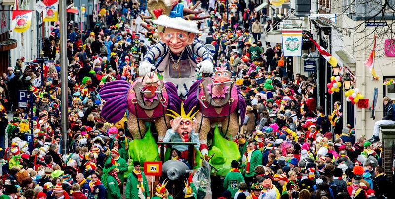

Carnival In Maastricht
Carnival is upon us, and we all know what that means. Maastricht will burst at the seams with the outrageously dressed, ostentatiously loud, and ravishly drunk, crawling out of the woodwork and taking to the streets. Shops will be closed, streets will be littered, and red-yellow-and-green flags will hang off every mast, balcony, and tree. It can be a little overwhelming for those of us who aren't from around here, and it's easy to dismiss it as ‘just one of those things’ the locals seem to enjoy. However, there is so much more to carnival. It has a long history, different manifestations all over the world, and has even inspired a critical theorist. Carnival was born as a pagan festival celebrating the end of winter, and the slow but steady crawl back to palatable weather, the movement from darkness to light. It’s all about a reversal of social roles (some random guy is crowned prince after all), and norms of behaviour, those are put on hold for a while. This was all part of driving those mean-hearted winter spirits away. Seriously, considering the chaos that breaks out in Maastricht each year, it’s not hard to see why the spirits don’t put up much of a fight. Somewhere along the line, carnival morphed into a Catholic celebration before the onset of the Lent fasts, and this probably explains why it’s still around in the south of the Netherlands. The name carnival originates from the Latin Carne Levare, which means ‘farewell to flesh’. Essentially, grab as many bitterballen as you can! In pagan times this is when the winter food stash would run dry, and in the Catholic incarnation fasting is just around the corner. So, joining in the fun? The first thing to do is find a proper costume, and no, last Halloween’s outfit will not do. The original function of the costume in carnival is to make a point, to perform social critique, by exaggerating or ridiculing an element of that ‘real life’ which has been suspended for a couple of days. This tradition is still kept alive today, like when in 2013 a carnival group in Belgium dressed up as Nazi’s to protest the rise of the far-right. That is why masks are so integral to carnival, allowing you the anonymity and perform your social critique freely. Anthropologists studying carnival have even suggested that during the 1960’s it was an important occasion for trying out different ways of living, and played a part in the individualisation and sexual liberation associated with that time. Dressing up is not just sartorial but can be political as well. Role reversal, suspension of norms, and political satire, no wonder carnival drew the attention of Russian critical theorist Mikhail Bakhtin (1895-1975). According to him, carnival makes us more human. It is all about the breaking down of boundaries between reality and performance, and audience and performer. Bakhtin believed that the suspension of social conventions means that people can meet each other as just that, human, stripped of all the distinctions which divide us. To him it was the enactment of utopia, real freedom, if only temporary. It teaches us a new way of being together in freedom and abundance, living a life which is dominated by play. He believed that carnival can make us conscious of the fact that everything we take so seriously in our everyday lives- work, studying, social roles- are temporary and not necessary. If we don’t like them, we can simply change them. Whether you will be floating between islands of sobriety, or fleeing to wait out the chaos in a more austere city, take carnival as an invitation to think like an anarchist. Follow the example of linguist and anarcho-syndicalist Noam Chomsky: wherever there is someone or something that has power over you, simply ask ‘why should I accept it’? Often it’s hard to think of appealing reasons. If you find yourself unprepared for carnival, with no party plans and no route of escape, stock up on coffee, bolt your doors, and read one of the articles on anarchism linked to below: Anarchism and the Occupy movement, in The Guardian Interview with Noam Chomsky Bakhtin on Carnival, in Ceasefire Magazine